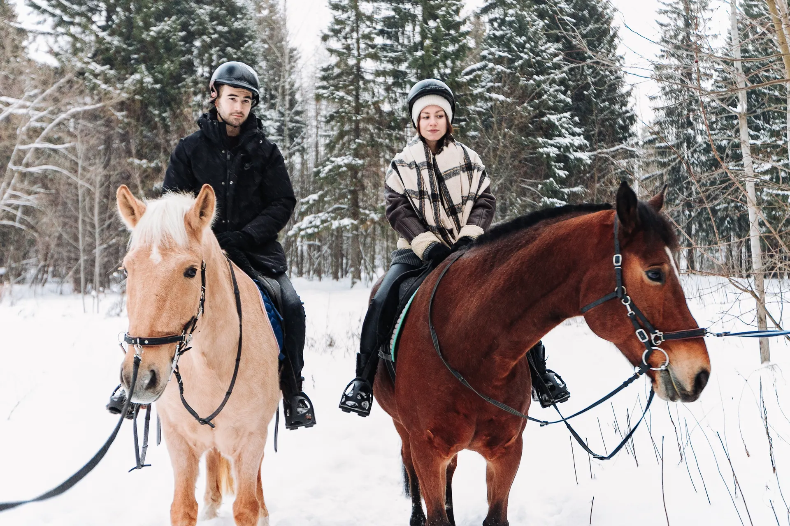
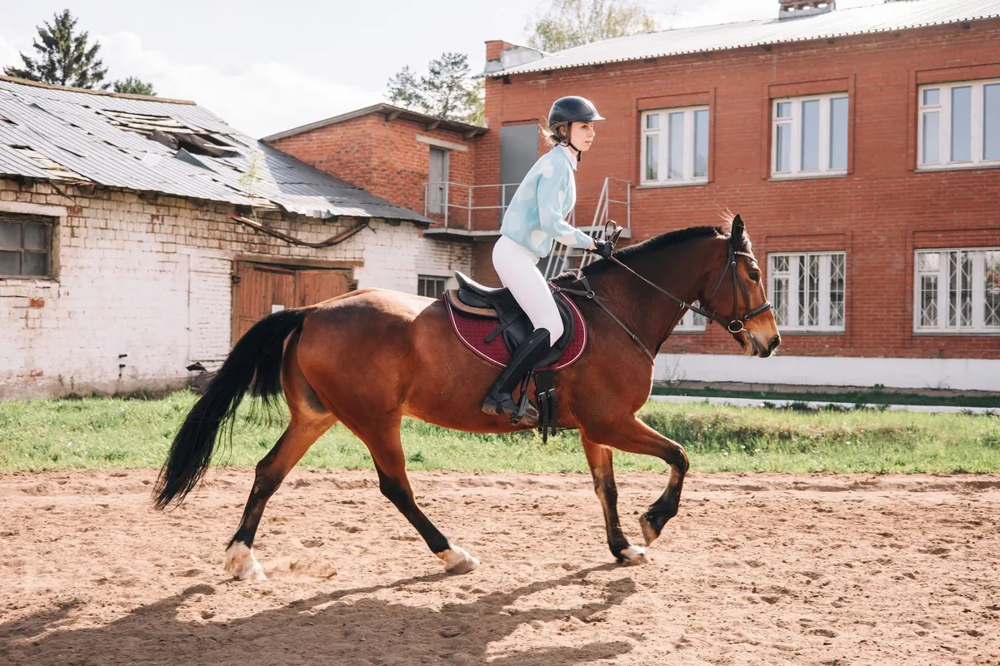
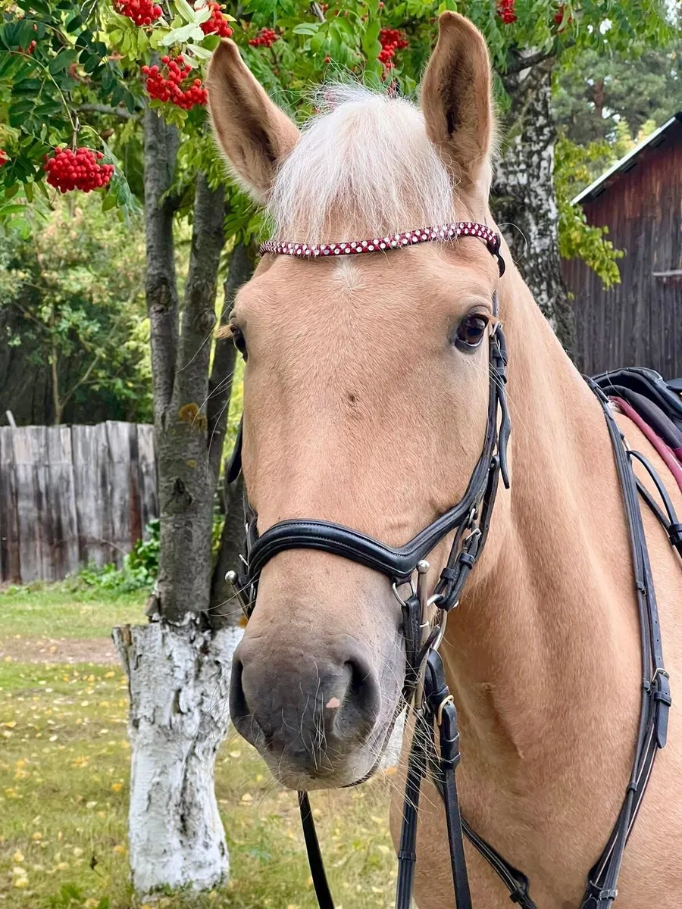
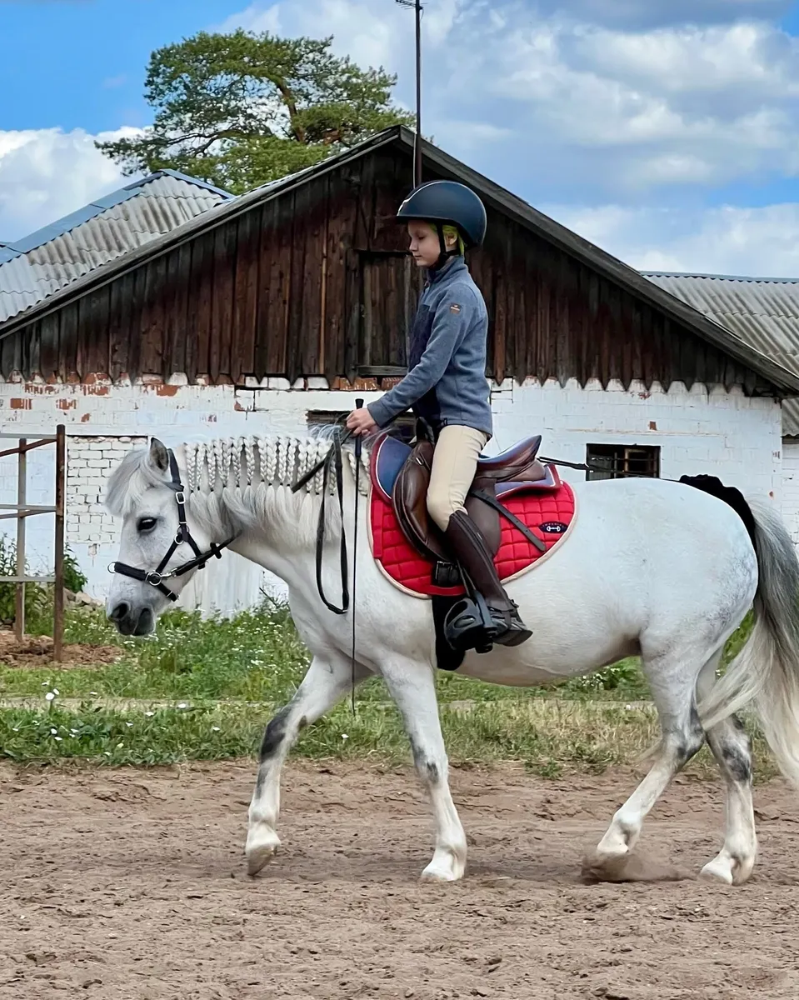

Ипподром · Ижевск
Конные прогулки и уроки верховой езды в Ижевске
Ипподром «Сириус»: прогулки по территории и лесу, пробная тренировка, экскурсия на конюшню и фотосессия с лошадью.
- Прогулки шагом в сопровождении
- Пробная тренировка 30 минут
- 4,5 на Яндекс.Картах

Занятия и цены
Цены с карточки ипподрома: прогулки, тренировки, абонементы, экскурсии.
Конные прогулки
- Прогулка 30 минуттерритория ипподрома, лес, только шагом в сопровождении1 800 ₽
- Прогулка 40 минуттерритория ипподрома, лес2 100 ₽
- Прогулка 1 частерритория ипподрома, лес2 700 ₽
Тренировки
- Пробная тренировка 30 минуттолько для тех, кто ранее не посещал конный клуб1 700 ₽
- Разовая тренировка 30 минут40 минут 2100 ₽, 60 минут 2700 ₽1 800 ₽
- Абонемент: 4 занятия по 30 минутобучение верховой езде, взрослый и детский5 400 ₽
- Абонемент: 8 занятий по 30 минут4 занятия по 40 минут 6100 ₽, 8 занятий по 40 минут 10200 ₽9 600 ₽
Экскурсии и фотосессии
- Экскурсия на конюшнюузнаете о лошадях и пони, посмотрите, как они живут450 ₽
- Семейная экскурсия без катаниядо 5 человек, цена за всех2 000 ₽
- Фотосессия с лошадью, 30 минут40 минут 2100 ₽, 1 час 2700 ₽, наряжаем по желанию, фотографов предоставляем1 800 ₽
- Заказ лошади в городусловия по запросууточнить
Цены взяты с карточки ипподрома на Яндекс.Картах и могут быть уточнены.
Как приехать на ипподром
- 01
Запись
Выбираете прогулку, тренировку или экскурсию, пишете день и время.
- 02
Знакомство с лошадьми
Приезжаете на Ленина, 104: сопровождающие помогают новичкам.
- 03
Прогулка или тренировка
Прогулки проходят только шагом в сопровождении.
- 04
Дальше
Абонемент на занятия или фотосессия с лошадью.



Что пишут гости
Для новичков и детей
Даже если никогда не сидели в седле, пишут в отзывах.
Ухоженные лошади
Родители хвалят лошадей, добрых и спокойных тренеров.
Внимание к безопасности
Профессиональные тренеры и хорошо обученные лошади.
Отзывы с Яндекс.Карт
«Отличное место для конной прогулки и занятий верховой ездой. Профессиональные тренеры, внимательное отношение к безопасности, хорошо обученные лошади и приятная атмосфера.»
enxo · 22 декабря 2025
«Ходили с детьми на экскурсию 9 августа, всё очень понравилось, спасибо! Мне хотелось, чтобы дети впервые познакомились с лошадьми и впечатлились»
Валерия Мордвинкина · 12 августа
«Просто супер дочке понравилось лошадки ухоженные, тренера добрые, спокойные»
Вера Савина · 28 августа
Отзывы с карточки на Яндекс.Картах.
Частые вопросы
Можно ли приехать, если никогда не ездил верхом?
Да, для первого раза есть пробная тренировка 30 минут для тех, кто ранее не посещал конный клуб.
Как проходят прогулки?
По территории ипподрома и в лесу, только шагом и в сопровождении.
Есть ли экскурсии для детей?
Да, экскурсия на конюшню без катания: рассказ о лошадях и пони, породах, питании и содержании.
Где находится ипподром?
Ижевск, ул. Ленина, 104. Вт-Вс 09:00-19:00, перерыв 11:30-14:00.
Приезжайте на ипподром
- Адрес
- ул. Ленина, 104, Ижевск
- Часы
- вт-вс 09:00-19:00, перерыв 11:30-14:00
- Телефон
- +7 (912) 443-08-94